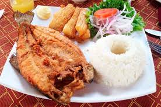

LISTAS
PRACTICANDO LISTAS
Listas Ordenadas
Comidas Favoritas
- Trucha Frita
- Arroz con Leche
- Milanesa de Pollo
- Hamburguesa
Listas sin Orden

Ingredientes para Trucha Frita
- trucha fresca
- Sal
- Pimienta negra molida
- 20 g de harina de trigo
- 20 g de harina de maíz
- 200 ml de aceite para freír
- Ajo en polvo
- papa
- choclo
Listas Descriptivas
- HOBBIES FAVORITOS
- DEPORTE: futsal
- VIDEO JUEGOS: Free Fire, clash royale

- GENERO Y CANCION FAVORITA
- RAP: Mockingbird, La Bella y La Bestia
- ROCK: Oasis